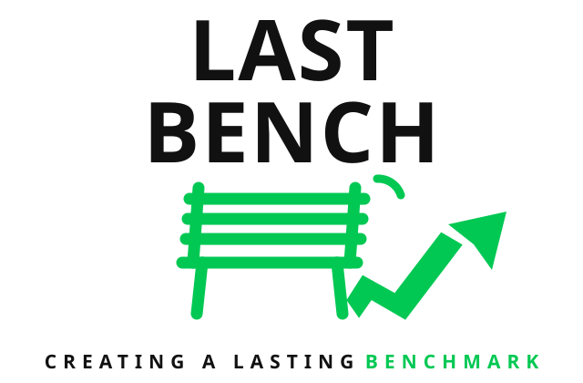

The bench is where every journey begins; the arrow is the future we build together. Digital SVG recreation — print-exact masters (primary, white, icon-only, badge) live in
assets/branding/logo-lockups.png
.